物語のプロット作り、特に複雑な伏線や並行して進むストーリーラインをどう整理するかに悩んでいませんか？この記事では、万能メモアプリ「Obsidian」のCanvas機能を使い、まるでホワイトボードに付箋を貼るような感覚でプロットを整理するメソッドを紹介します。
なお、この記事は希流ハヤさん主催の「創作系Obsidian アドベントカレンダー2025」19日目の記事になります。
何を作るのか？
Obsidian Canvasを使って、物語の時間軸を二次元的に表現したシステムを作ります。 マクロな時間軸を横軸、ミクロな時間軸を縦軸に取り、ざっくりとした物語の枠組み（起承転結みたいな）でエリア分けをして、そこにアイデアをまとめたノートを並べ替えすることで、プロットを推敲します。
最終イメージのスクショはこんな感じ…。
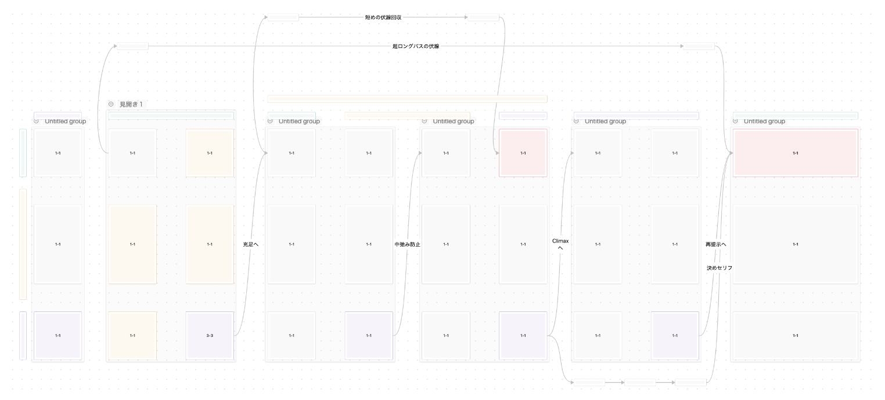
もう少し見やすく図にすると…
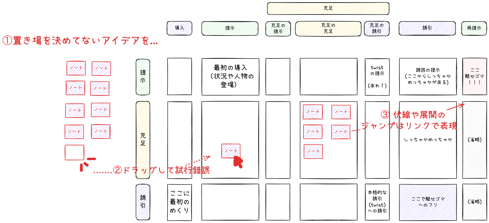
「頭の中にあるアイデアを理想的なタイミングに配置しようぜ」って感じです。
どうやって実現するのか？
Obsisidan Canvasという機能を使います。 本来の機能は、ノート（obsidian上共通のメモ）やカード（canvas上だけのメモ）を二次元空間に並べて、お互いをリンクさせたりして情報を整理すること。 これを二次元の表のように使って、漫画紙面上の時系列を表現します。
なぜObsidianを選ぶのか？
Miroなど他のツールも便利ですが、Obsidianには創作者にとって嬉しい利点があります。
- 知識の集約と連携: アイデアメモとしてのObsidianと共通のリソースを活かせます。
- 執筆への移行: プロットが固まったら、Canvas上のノートを土台に物語を書き始められます。
ただし、Obsidian Canvasには細かい操作性に欠けるという欠点があります。 特にリンク（カードやノート同士を結ぶ線）の軌道をコントロールできないところは困りどころ。 この解決方法については後に触れます。
「プロット」の定義について
解説に入る前に用語整理です。 この記事でいうプロット ＝「紙面上の時系列の順番で整理した出来事」です。 ストーリー(時系列に沿った出来事の順番、ざっくりしたあらすじ)とは異なりますのでご注意ください。
プロットの推敲がうまくいかない理由
なぜプロットの推敲はしんどいのでしょうか？ 現代の物語は複雑です。何が起こるか、よりもどう見せるか。読者が体験する感情の起伏に着目します。
伝統的な（？）起承転結はこんな感じ
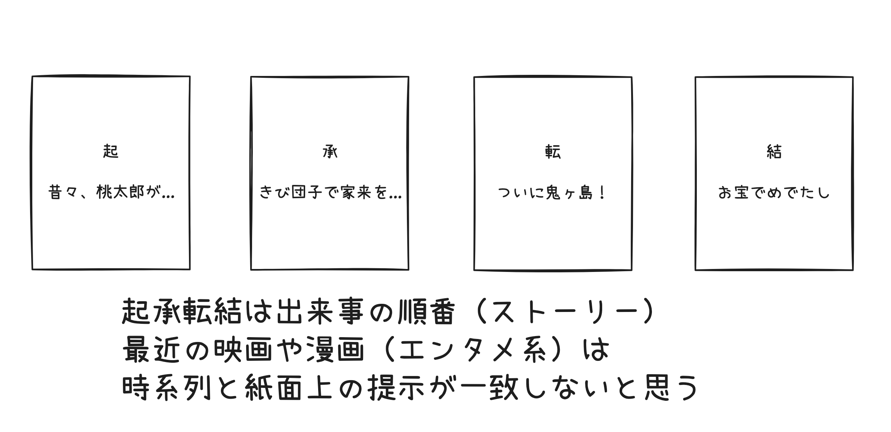
現代では、こうした単線的な構造がハマる作品は少数です。 傾向として、ナラティブ（語り方）の面でより複雑になっています。 よって、下に示すようないろいろな駆け引きが求められます。
::: message 例
- この場面を描くと恐怖やミステリーが半減しちゃうから省略しよう（展開のジャンプ）
- この見せ場で感動と衝撃が増すようにヒントは前半で出しておこう（伏線）
- メリハリをつける為にこの辺の説明はさらっと流そう（情報の重み付け） :::
こうした難しい駆け引きは全体構造が見えて初めてできる難しい作業です。 物語の断片を並べる段階では俯瞰的な、アイデア出しの段階では集中的な思考が必要だからです。
このメソッドの狙いは、Obsidian Canvas上で両方の作業をシームレスに行うこと。 そのために物語全体をなるべく単純化しています。
- 時間表現を左から右への横方向の「１次元」から、「２次元」の面に転換（線からエリアへ）
- 時間軸そのものを物語の機能的に整理して単純化（エリアをラベリングして整理）
理論：複雑なプロットを整理する2つの核
核となるのは、「二次元配置メソッド」と「トライアド理論」という2つの考え方です。
ただし後者は他の有名な理論や自身のやり方で置き換え可能です。
1. 二次元配置メソッド（obsidian canvasを利用）
物語の時間を「マクロな進行軸（横軸）」と「ミクロな進行軸（縦軸）」の二次元で捉える方法です。
- 物語に必要なアイデアをカードとして自由に書き出す
- アイデアを二つの時間軸で表された空間に配置しながら全体の構成を考える
→ アイデア出しと構成の整理を同時に、そして試行錯誤しながら進めることができます。
2. トライアド理論
ざっくり言うと、「物語を、大きな次元（お話全体）でも、小さな次元（ページ単位）でも、三つの要素に分類して考える物語構成理論」です。その三つの要素というのが「提示」「充足」「誘引」であり、この三つの組みをトライアドと呼んでいます。
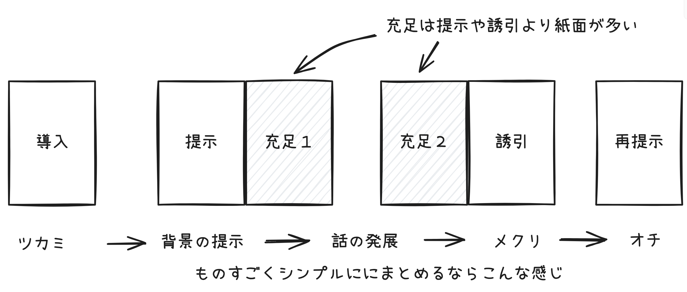
この「提示」➡︎「充足」➡︎「誘引」の役割は漫画の見開きページの構成と相似関係にあります。
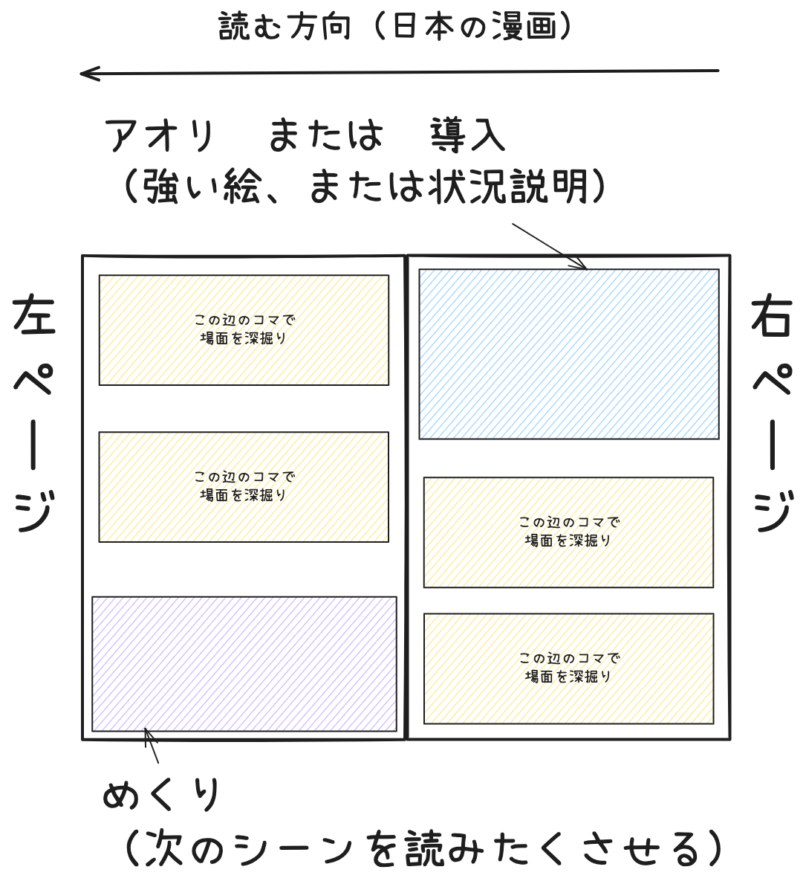
- 提示: 新キャラの登場や状況説明など、読者の注意を引く=「煽り」のコマ
- 充足: 「提示」された内容を補足し、読者の理解を促す=説明のコマ
- 誘引: 次のページをめくりたくなるような「引き」を作る=「めくり」のコマ
この構造を物語全体にも適用する（尚且つ、「提示の中の提示」「提示の中の充足」…という感じでフラクタルに適用）のがトライアド理論です。
ややこしければ、起承転結や序破急とかと置き換えて読んでいただければ結構です。
二つをまとめると…
このメソッドでやろうとしていることを図にすると…
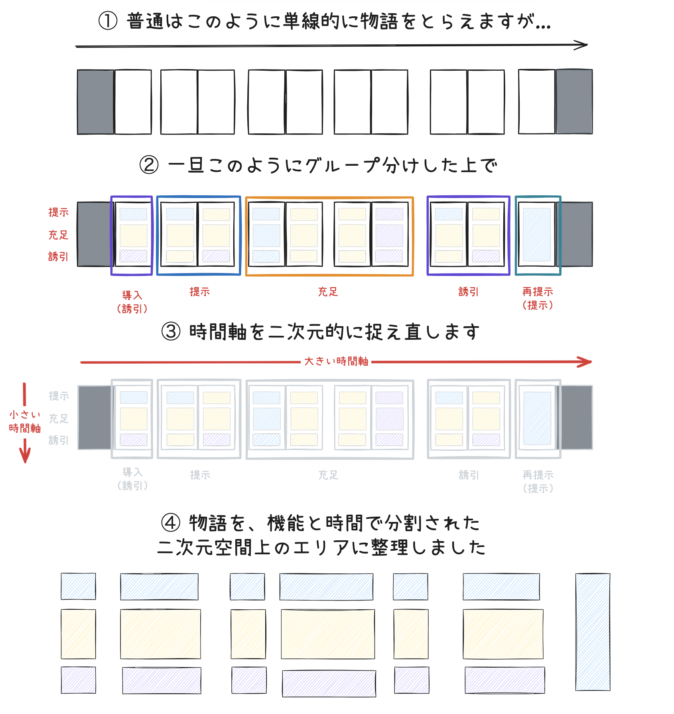
実践編：二次元配置メソッドでプロットを作る
では、まずは二次元配置メソッドのベースをObsidian Canvasで作っていきます。
なお、以降の解説はスクショではなく図を使って説明します。 その方が見やすいし、Obsidianでの細かい実現方法は各人でいいかなと思うので… （「こんなこともできまっせ」というアイデア例の共有が狙いです。Obsidianのチュートリアルのつもりですが、理論的・概念的な説明に見えるかもしれません）。
例として、10ページの短編漫画を想定して進めていきます。 トライアド理論で図にするとこんな感じです。
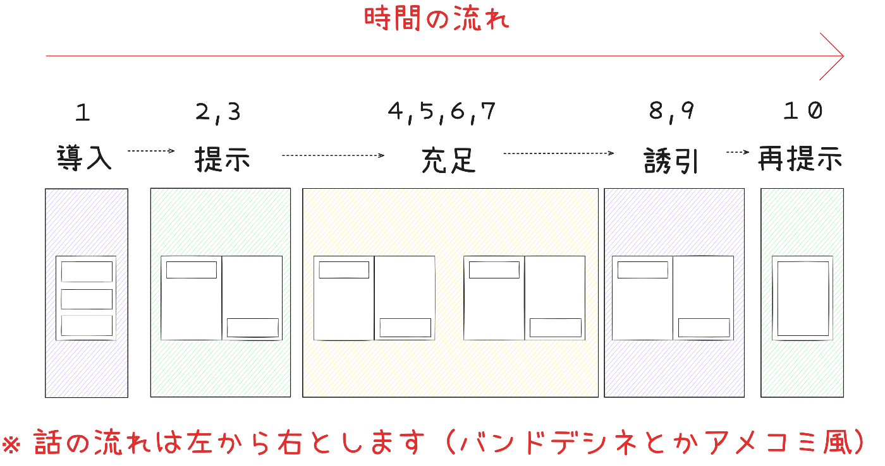
数字はページ番号、また色分けしています （誘引は紫、提示は緑、充足は黄色。ちなみに呼び方変えてるだけで導入=誘引、再提示＝提示）。
充足のパートは特殊です。 まず、他のパートの２倍程度の長さがあります。 また、そのパートを一つのトライアドと捉えて再分割します（充足の提示、充足の充足、充足の誘因）。
ステップ1：フレームの準備
まずCanvasを開き、見出しを設定します。 横に並ぶ見出しが物語の大きな流れ（マクロな時間軸）。 縦に並ぶ見出しがページ単位の流れ（ミクロな時間軸）。
Canvas上では見出しは「カード」を使って表現します。 機能ごとに３色に色付けすることをお勧めします （カードは縮小して俯瞰した時に内容が表示されなくなる欠点があります）。
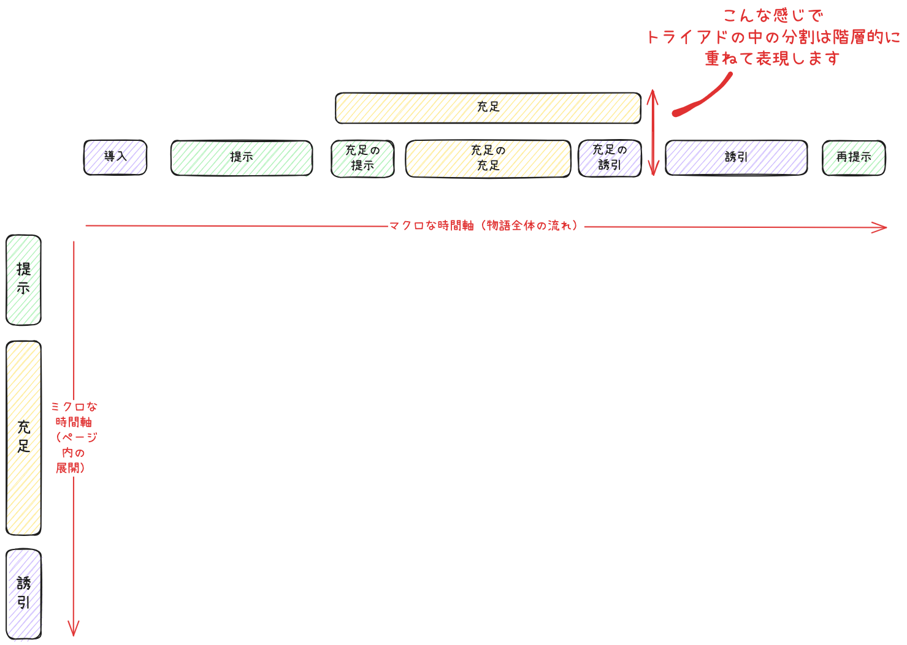
見出しの長さは、時間の長さ（つまり紙面を占める割合）を示します。
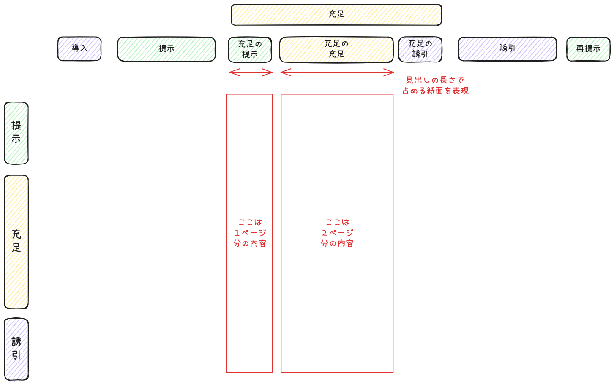
二つの時間軸が交わる場所に、四角いゾーンを作ります。 Canvasでは「グループの作成」を使います。
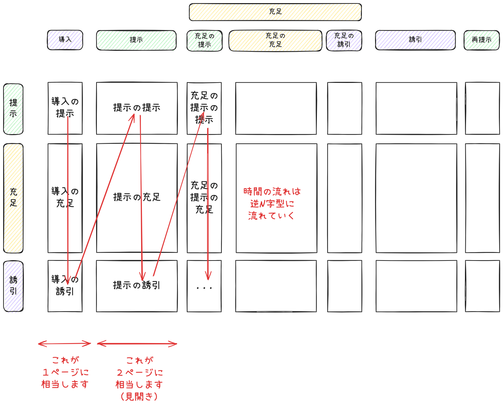
時間の流れとしては、赤い矢印で示す順番になります。 これでベースは完成です。
Obsidian上では次のような感じです。
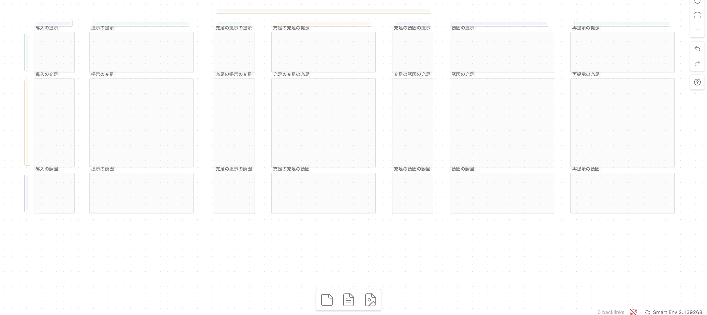
このフレーム全体がホワイトボード、グループが分割された物語のゾーン。 ここに、次のステップで書き出したアイデアを付箋のような感覚で並べていく感じです。
ステップ2：アイデア出しゾーンの作成
同じCanvas内のあいたスペース、さっきのフレームの左側などで、アイデアを出します。 アイデアは物語に入れたい設定、セリフ、シーンなど思いつくままに、「ノート」または「カード」の形式で書き出します。この段階では整理する必要はありません。自由に発想を広げましょう。
ただしあまり細かく分けすぎず、扱いやすい単位でまとめるのがコツです。
追加の方法（簡単な方法とおすすめの方法）
Canvas上で一番簡単な方法は、適当な空間で右クリック → Add CardまたはAdd note from vault
これでも全然不便ありませんが、ガンガン追加していくとスペースが足りなくなったりもします。
おすすめはBaseを使った方法です。 アイデア用フォルダ内のノートを列挙表示するBaseファイルを作り、Canvas上に配置（下図左側）。 アイデアをCanvasに追加する場合は、Base上のファイルをドラッグするだけです。
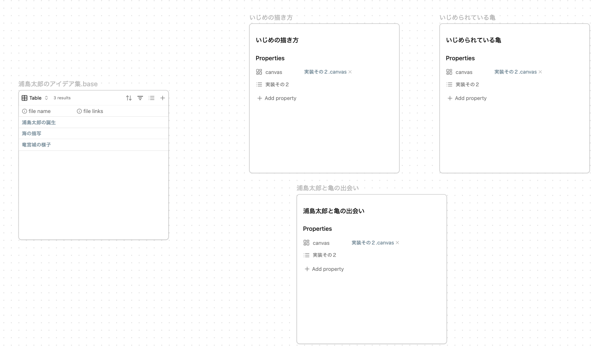
アイデア自体を増やしたい場合は、Canvas上のBaseカード右上の+ボタンをクリック。
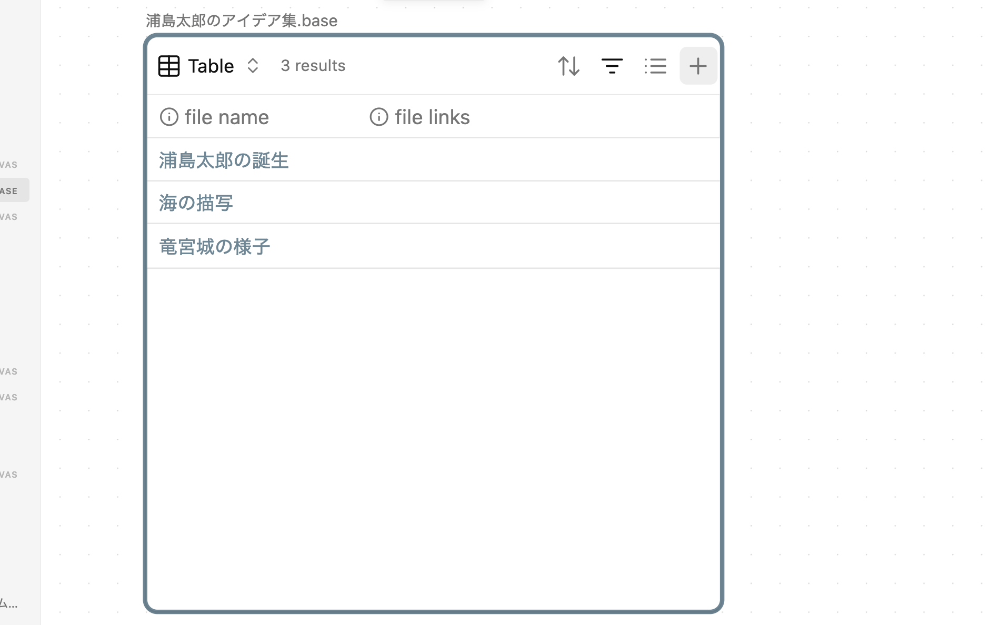
「Canvasに配置したら自動的にBaseから消える」ようにもできます。 Baseのフィルターを次のように設定しましょう（canvasとリンクを監視しています）。
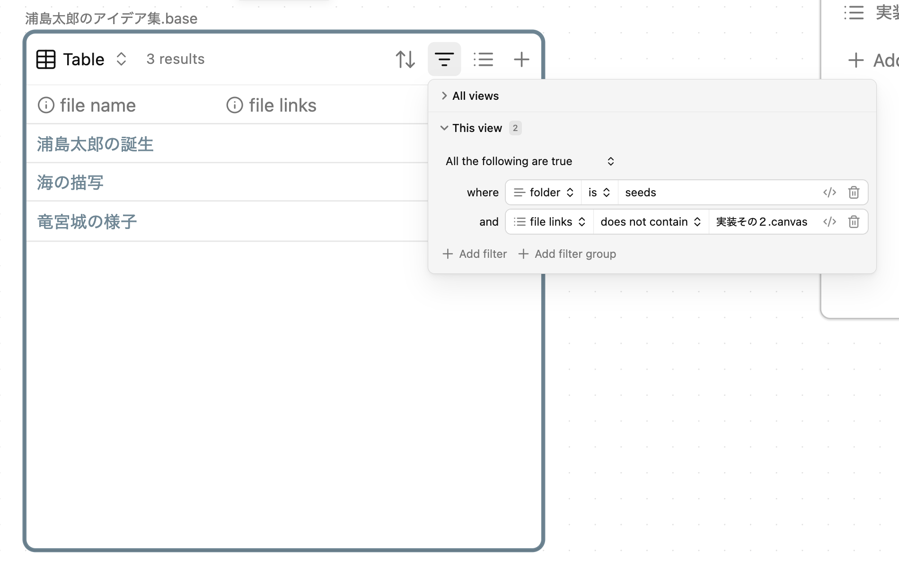
ステップ3：アイデアを配置する
書き出したアイデアカードをフレームの中にドラッグ＆ドロップで配置していきます。 「この見せ場はこのページに置きたい」「この伏線とこの回収を対比させたい」 といったことを考えながら、大まかな位置を決めていきます。
この際、見せ場や強い引きにしたいエリア（グループ）に色付けをしておくと便利です。 この時点でグループごとにリンクさせてもいいです （対比させたい部分など。リンクはいつでも削除、リンク先対象の差し替えが可能）。
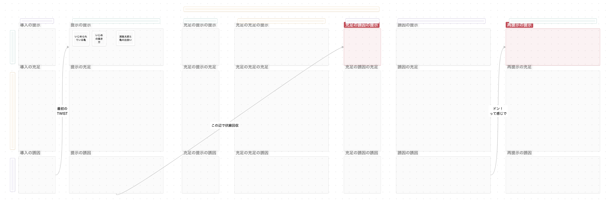
具体的にアイデアが出揃ってきたら、アイデア同士をリンクさせます。 リンクには「ラベル」を追加することができます（下図、矢印の間の文字）。
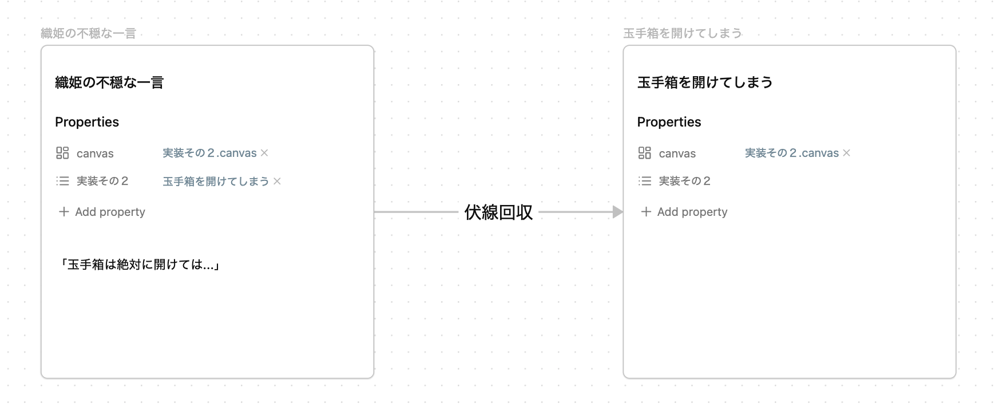
特に「フリと回収」「伏線」「時間軸のジャンプ」といった複雑な構造を矢印で繋ぐと分かりやすい。 先に枠外でアイデア同士を繋いでから配置するのも効果的です。 リンクを結ぶことで、アイデアそれぞれが持つ「物語上の機能」を整理することができます。
応用：リンクの軌道を制御したい時は？
Canvasではリンクの軌道を細かく制御することができません。
- 軌道が他のリンクの軌道と重なる
- ラベルが別のノートで隠れてしまう
こんな時はカードを中継して迂回します（中継カードを動かして軌道を調整）。
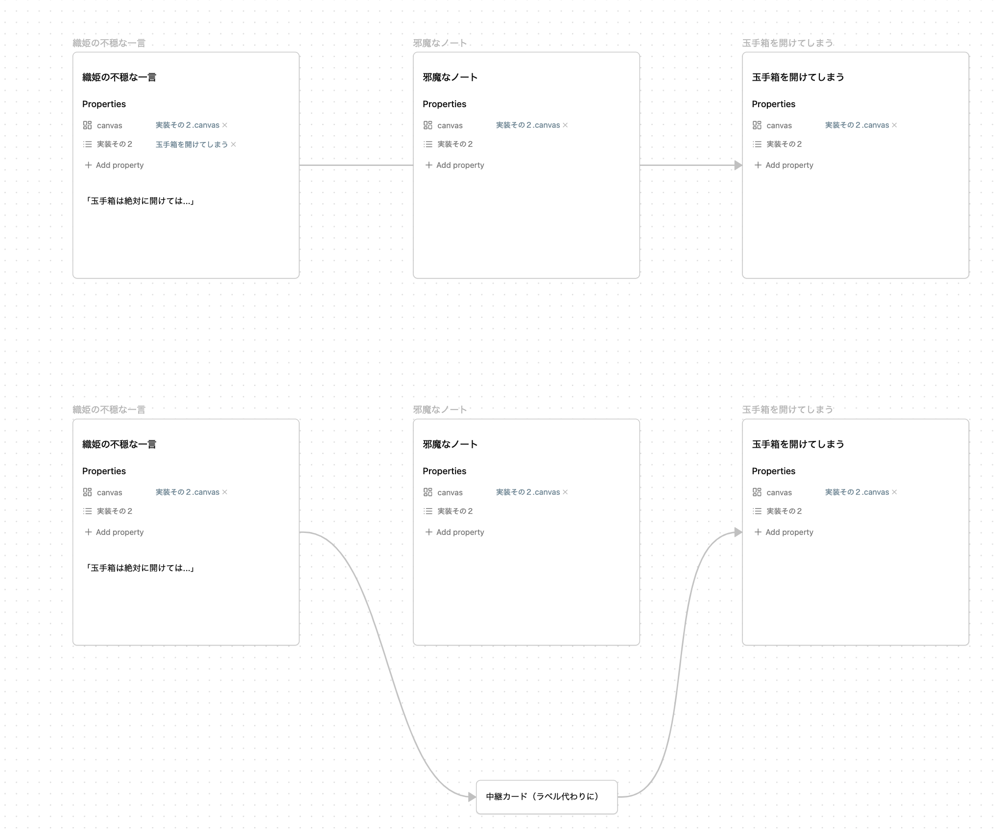
ただし、ノート同士のリンク・バックリンクに関しては要注意です。 通常はCanvas上でのリンクに応じてノート間のリンクが自動反映される場合でも、カードを中継する際は手動でノートに直接リンクを追加する必要があります。
応用：カードを使ったロングパスの伏線やナレーションなどの表現
私は上下のスペースを「伏線」や「ナレーション」のエリアとして使っています。
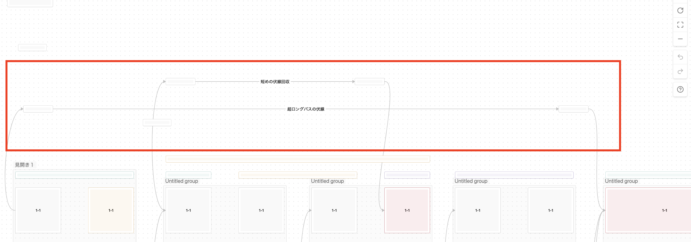
漫画は結構パラレルに展開することが多く、「その場にいない人物のナレーションに沿って、別の展開が映像と少ないセリフで表現される」みたいなのが多いです。 こういう時の並走的なナレーションの表現にはカードを使います。おおまかな台詞やアイテム名などをカードに書き出して、登場順に繋げるのです。
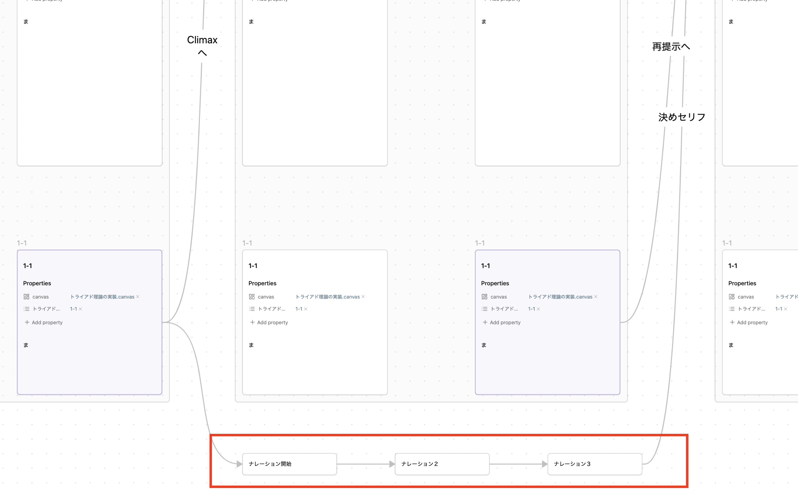
カードは、ノート（アイデア）にするまでもないような情報の表現に便利です。
応用：ノートの繋ぎ方の工夫
ノートの繋ぎ方に意味を持たせるとより直感的でしょう。 私は「左右で繋げば伏線の設置と回収」「上下で繋げば展開の省略と回収」として区別しています。 もちろん、リンクの軌道制御を重視して、あえてルールを設けないのもアリだと思います。
このメソッドの分析
大きく二つの利点があると思います。
先に構造を決められることの利点
アイデアがフワッとしていたとしても、先に時系列的な構造を決めておくことで、アイデアが具体化することがあります。
二重、三重の役割を持つ場面ってありますよね？
例えば、主人公とある行動（助けを求める人を見捨ててしまう）が、次のように別々の場面にとって別の役割を果たすことがあります。
- A 中盤の展開へのきっかけとして（例:行動を物陰から見ていた悪役から糾弾され、社会的に転落する）
- B 終盤の展開の対比として（同じような状況が再び起きるが、主人公は別の行動を取り、「克服」と「成長」を表現）
こういう抽象的な設計だけが決まっている時、アイデアをいきなり具象化せずに、いったん他の場面への役割が視覚化することは大事です。役割が明確だからこそ、条件が明確になり、具体化できるからです。この場合は「AとB両方を効果的に満たす行動ってどんな行動だろう？」っていうのを、物語の題材にあった形で探せばいいわけです。
時系列と機能を直感的に理解できることの利点
アイデアを配置する際に、常に時系列と機能の両方を意識することになります。
例えば誘因にあたるイベントを探したければフレームの下部を横ぎるように探せばいい。 中でも、マクロの時間軸上の誘因にあたるパートとそれが交わるところは特に誘引の役割が強い箇所。 最も「引き」の強いイベントは迷わずそこに置けばいい。
逆に、 “「提示」や「充足」パートの「引き」がまだスカスカだから、もうひと展開アイデアを増やそう” とかの分析も一瞬でできるわけです。
完成、そして執筆へ
こうしてプロットの二次元配置図が完成したら、あとはこの設計図を元に執筆を始めるだけです。
おすすめのアプローチはcanvasに散りばめられたノートを整理した上で直接書き込む方法。 その際、アイデアは近いノート同士で統合、またはより扱いやすい単位に分割します (note composerなど標準のコアプラグインで可能)。
断片ごとの文脈を理解しつつも、好きな順番で書くことができます。 迷った時はこのCanvasを見返せば、いつでも物語の全体像に立ち返ることができます。
複雑な物語の羅針盤として、このメソッドを活用してみてください。
:::message
備考
- (今回は１０ページでしたが)話が長くなってもある程度までは対応できます(50ページくらい?)
- より細かく考えたい場合は、マクロな時間軸をより細かくトライアドに再分割します
- 中編以上の長さや、より詰めた設計をしたい場合は、もっとリンク表現に特化した方法があります。需要があれば今後共有します（今回のような二次元ではなく、縦方向一次元に階層構造で表現したもの） :::
⚠ Switch to EXCALIDRAW VIEW in the MORE OPTIONS menu of this document. ⚠ You can decompress Drawing data with the command palette: ‘Decompress current Excalidraw file’. For more info check in plugin settings under ‘Saving’
Excalidraw Data
Text Elements
Embedded Files
981ae13cf6120b9f1e4422bdd90520b1d50cc1ef: unnamed.png
{kind=link}